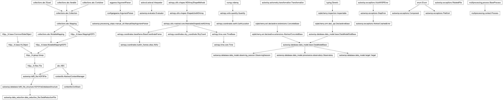

autowisp.processing_steps.solve_astrometry module
Class Inheritance Diagram

Fit for a transformation between sky and image coordinates.
- autowisp.processing_steps.solve_astrometry._collect_astrometry_diagnostics(transformation_estimate, solve_diagnostics, header)[source]
Return a list of (name, value) diagnostic tuples.
- autowisp.processing_steps.solve_astrometry._compute_mag_zeropt(catalog, cat_extracted_corr, dr_file, configuration)[source]
Return the source extraction magnitude zeropoint, or None.
- autowisp.processing_steps.solve_astrometry._compute_pointing_offset(header, ra_cent, dec_cent)[source]
Return angular distance in degrees between target and image center.
- autowisp.processing_steps.solve_astrometry._compute_zenith_distance(header, ra_cent, dec_cent)[source]
Return the zenith distance of the image center (None if unavailable).
- autowisp.processing_steps.solve_astrometry.add_anet_cmdline_args(parser)[source]
Add to parser all command line arguments needed to run astrometry.net.
- autowisp.processing_steps.solve_astrometry.allowed_interrupted_status_values = (0,)
This step records only “started” before it finishes, so that is the only state an interrupted run can leave behind.
- autowisp.processing_steps.solve_astrometry.astrometry_process(task_queue, result_queue, *, configuration, web_lock, mark_start, mark_end)[source]
Run pending astrometry tasks from the queue in process.
- autowisp.processing_steps.solve_astrometry.cleanup_interrupted(interrupted, configuration)[source]
Delete any astrometry datasets left over from prior interrupted run.
- autowisp.processing_steps.solve_astrometry.construct_transformation(transformation_info)[source]
Construct a Transformation object from the given information.
- autowisp.processing_steps.solve_astrometry.find_final_transformation(header, transformation_estimate, xy_extracted, web_lock, configuration)[source]
Find the final transformation for a given image.
- autowisp.processing_steps.solve_astrometry.get_xy_extracted(dr_file, srcextract_version)[source]
Return array of extracted source positions.
- autowisp.processing_steps.solve_astrometry.manage_astrometry(pending, task_queue, result_queue, mark_start, mark_end, workers=())[source]
Manege solving all frames until they solve or fail hopelessly.
- autowisp.processing_steps.solve_astrometry.parse_command_line(*args)[source]
Return the parsed command line arguments.
- autowisp.processing_steps.solve_astrometry.prepare_configuration(configuration, dr_header)[source]
Apply fallbacks to the configuration.
- autowisp.processing_steps.solve_astrometry.print_file_contents(fname, label)[source]
Print the entire contenst of the given file.
- autowisp.processing_steps.solve_astrometry.save_to_dr(*, cat_extracted_corr, trans_x, trans_y, ra_cent, dec_cent, res_rms, configuration, header, dr_file, catalog)[source]
Save the solved astrometry to the given DR file.
- autowisp.processing_steps.solve_astrometry.save_trans_to_dr(*, trans_x, trans_y, ra_cent, dec_cent, res_rms, configuration, header, dr_file, **path_substitutions)[source]
Save the transformation to the DR file.
- autowisp.processing_steps.solve_astrometry.solve_astrometry(dr_collection, start_status, configuration, mark_start, mark_end)[source]
Find the (RA, Dec) -> (x, y) transformation for the given DR files.
- autowisp.processing_steps.solve_astrometry.solve_image(dr_fname, transformation_estimate=None, *, web_lock, mark_start, mark_end, **configuration)[source]
Find the astrometric transformation for a single image and save to DR file.
- Parameters:
dr_fname (str) – The name of the data reduction file containing the extracted sources from the frame and that will be updated with the newly solved astrometry.
transformation_estimate (None or (matrix, matrix)) – Estimate of the transformations x(xi, eta) and y(xi, eta) for the raw frame (i.e. before channel splitting) that will be refined. If
None,solve_fieldfrom astrometry.net is used to find iniitial estimates.web_lock (multiprocessing.Lock) – A lock held while submitting a plate-solve request to the astrometry.net web API.
mark_start (callable) – Called before anything is written to the DR file if successful transformation is found.
mark_end (callable) – Called after a successful transformation is fully written to the DR file.
configuration – Parameters defining how astrometry is to be fit.
- Returns:
- the coefficients of the x(xi, eta) transformation converted to RAW
image coordinates (i.e. before channel splitting)
- trans_y(2D numpy array):
the coefficients of the y(xi, eta) transformation converted to RAW image coordinates (i.e. before channel splitting)
- ra_cent(float): the RA center around which the above transformation
applies
- dec_cent(float): the Dec center around which the above transformation
applies
- Return type:
trans_x(2D numpy array)